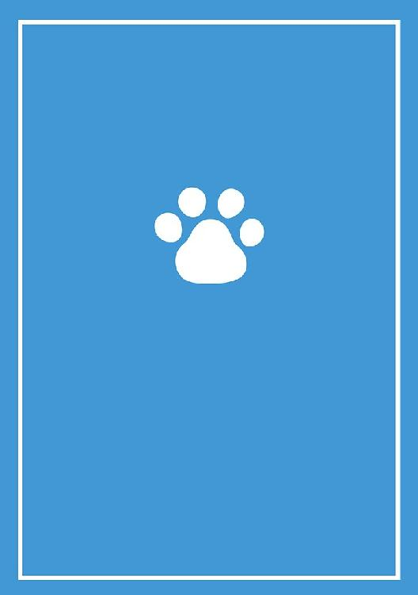

| 立方体都市 犬吠埼ナイン構想 (電子書籍普及委員会) | |
| 犬吠埼一介 | |
| (2017) | |
夜を徹して働いていた。そりゃそうだ、この街には夜しかない。太陽を失った街。アイデアシティには、朝は来ない。世界の終わりの日まで。皆、朝日を望みながら、必死で働いている。生まれては消える、そのくり返しを、愛の響き合いで繋ぎ合わせながら。そう思った途端、世界が揺れた。
何事だと思う間もなく僕は気づいてしまった。奴だ。イレイザーが来た。大切な書類たちを収納した棚が音を立てて崩れるなか、僕は、何はなくとも彼女の姿を探した。だがすぐに、ぎらつく銃口を下げた黒い戦闘服の男たちが部屋になだれ込んできた。僕はとっさに身を隠す。死が火を噴く。
イレイザーは、アイデアを、消去する。ならぬ！！ その姿で、あってはならぬ。消しゴムのモチーフに、文字たちは敵わない。なすすべもなく、追いやられるしかないのだ。だが、諦めない。僕は、諦めない！ という文字を全身にみなぎらせて、消しゴムの無慈悲な衝撃に耐えようとした。
イレイザーたちは、満足したのか、部屋を去ったようだ。ふっ、甘いよ。消し残しだ。僕は生きている。はっとして、瓦礫と化した消し屑たちのあいだから這い出すと、僕は、ゆらぎ子のところへと向かった。大切な彼女を、消されてたまるか。手のひらに汗がにじむ。すぐに、見つかったよ。
彼女は、歌いながら、そこにいた。僕を待っていた、そんな感じで。少しも、消されることを恐れていない。彼女はいつだってそうだ。手のひらに汗を浮かべて、こうして駆けつけてきた僕をあざ笑うかのように、僕の瞳の奥を覗き込むのだ。逃げよう。僕が短くそういうと彼女はついてきた。
タクシーが外で待っていた。運転手の男は、粛々と僕らを乗せると車を出した。ビルが遠ざかる。アイデアシティの車通りはまばらだ。ほんの少し進んだところで、背後でビルが爆発する轟音が響いた。車もそんな轟音に驚いたのか止まり、震える。ビルはもう駄目だろうかと、腰を浮かせた。
その途端。何かが引っかかった。何年も掛けて積み上げた文字たちを、同じ文字である僕が、守ろうと腰を浮かせたんだ。憤り振り返ると、僕の「左手」が、彼女の「右手」によって、握られていた。彼女との繋がりがきしんだ。行かないで！！ その文字で、全身全霊をいっぱいにした彼女。
僕は、彼女の手のひらにも、汗がにじんでいるのを感じた。炎が、夜空の闇を照らしている。大切な文字が燃える、燃える。焦る。頬を汗が伝うのが分かった。ゆらぎ子が手を離さない。運転手を見た。目をそらすのかと彼女が手を握りしめたとき、その強さに、僕は諦めた。車は走り出した。
アイデアシティは、売れない創作家が頭の中に構築した、情緒不安定な世界だ。住人たちは、彼の本が少しでも売れるようにと、必死で働いて暮らしている。文字たちの街。どんな言葉も住むことができる。ただの言葉でよければ。言葉の連なりが世界を構築する、その繋がりこそアイデアだ。
言葉たちは、彼が幼いころから、アイデアシティを開拓してきた。始めは何もなかったらしいよ。だが、創作家が壁にぶつかる度に街は大荒れに荒れたと、歴史書は語っている。ならぬ！ その姿でいてはならぬ、と、イレイザーたちが、せっかく命懸けで積み上げたアイデアを駆逐するんだ。
僕は、いつからか生まれた。気がついたら、ここにいたんだ。僕は、絶対夫。弱い力を司る。創作家があまりにも愚かだから、僕が生まれたんだと思う。ありえないことを望むよ。何か問題が？ 僕が連ねる文字は、空虚だ。冷たくて、笑わせてくれる。単なるジョークにはもってこいだがね。
皆が、僕を絶対夫と呼ぶので、僕はその名前を受け入れた。今、車に乗っている彼女は、ゆらぎ子。僕の唯一の彼女だ。創作家にすら彼女がいないのにね。いや、だからか。彼女はすごいんだよ。僕がゆらぎ子と呼んだだけで、受け入れてくれたくらいだ。他人の呼び名には耳を貸さなかった。
ゆらぎ子の力は、強いよ。創作家が寂しかったので生まれたのかな。あるいはもっと別の理由かもしれない。絶対夫である僕にそこまで分かるはずがないじゃないか。無理をいうなよ。彼女の力は包み込む力。僕の力は殴る力だから、ジャンケンで彼女に勝ったことも、引き分けたこともない。
絶対と、ゆらぎと、運転手と、車。僕ら文字たちは、作品が完成するまで朝の来ない街を、ひたすら飛ばした。古きよき歌と音楽が流れている。ゆらぎ子が、アイデアシティから持ち出したんだよ。イレイザーの目を盗んでね。僕は、彼女も、彼女の歌も好きだ。とても惹かれるんだ。きれい。
車は街を出て、真夜中の海へ。灯台のある海岸。創作家は、イレイザーたちを、なぜかこの場所には近づけたがらないんだ。絶対にね。何がそんなに、ここにあるんだろうか。灯台の目が、ぐるぐると、回る。なぜだ、なぜだ、なぜだ。僕には、あの光が、何を求めているのかが、分からない。
車を降りて、崖道を歩くと、海風が通り過ぎて気持ちよかった。ゆらぎ子は、タクシーから聞こえてくる音楽に合わせて、歌を口ずさんでいる。彼女の髪が、潮風に流れて揺れる文字の連なりが美しくて、すてきで、僕は言葉を忘れそうになる。彼女が好きだ。その文字で埋め尽くされるんだ。
灯台の光。真夜中の海。海岸。物語が完成したとき、最初に光を浴びる場所だそうだ。誰にも分からないように、そっとその場に印をつけた。紙に、刻印したんだ。いつかこの場所を訪れることを信じていたから。絶対夫である僕こそが、きっとイレイザーの目を抜けて、朝を迎えてやるんだ。
タクシーの運転手は、煙草をくわえて、何もないように見える夜空を見ている。煙という文字が空を流れると、星がまたたいているのが見えてきた。この男は、タクシーの運転手だ。僕らが創作家の頭の中を移動するときに、彼はいつもタクシーを出してくれる。便利な男だ。車も高性能だよ。
イレイザーたちは、創作家が悩んだ末についに駄作だと決心したアイデアを一掃し、きっと今ごろ、何事もなかったかのように白紙のビルが用意されている。まったく、こっちの苦労を何だと思っていやがる。まあ、創作家にも事情があるだろう。彼がこうしたからにはチャンスでもあるんだ。
ゆらぎ子と僕だけが、駄作として処分されたアイデアの連なりから、生き残った。今こうして、イレイザーの入り込めない場所に、逃げることができたんだよ。いいじゃない、彼女と僕と、この物語は、二人が主役なんだから！！ 僕らふたりが、合わさって、創作家なんでしょ。間違いない。
僕は、灯台がぐるぐる回る、その光をぼんやりと見ながら、決心した。ゆらぎ子とふたりで、絶対にイレイザーに負けない言葉の連なりを、画期的なアイデアを、この世界に作ってみせるってね。すばらしい世界になる。間違いない。僕は、絶対夫だよ？ 僕がいうからには間違いないんだよ。
何事もなかったかのように、アイデアシティに平穏が戻った。何事もなかったわけじゃない。昨日までの言葉たちが消えている。跡形もなく。これじゃ、いつまでも夜は終わらない。僕ら文字は寝る必要すらないから、別に困らないがね。さあ、新しいアイデアを構築しよう。「立方体都市」
観測によると、創作家の世界は、この街以上に混沌としていて、悲惨で、やるせなくて、見ていられないものらしい。頭の中から見ていてそう思えるくらいだ。目を持っている彼は、かなり困惑しているだろう。困ったもんだ。街が荒れるし、物語が途中で破棄されると、また逃げなくちゃね。
時間がちくたくと流れた。この世界には一応音もあるんだ。ちく、たく、ちく、たく。文字が、聞こえるだろう？ 一事が万事、そんな感じなんだよ。頭の外と違うのは、ここには文字しかないのと、太陽がのぼらないこと。朝が来たってことは、「上がり」なんだから。昼夜逆転もない徹夜。
灯台の光が何を見ていたのか。なぜだ、この言葉の文字から、推し量ることにしよう。イレイザーが、僕らが何年も掛けて築いてきたこの世界を消したということは、その内容じゃ、この世界には朝は来ないってことだ。灯台の目が何を見ているのかは、僕ら文字は直接は見られないんだよね。
シュレディンガーの猫。この世界の住人である彼が、いきなり、僕の部屋をしゃっと横切った。彼は本当に唐突なんだ。よく見ないと、いるかいないかすら、分からない。この世界では、彼はとても尊重されている。非常に強い力を持っている。ワイルドカードってやつだ。僕は、素知らぬ顔。
時間が過ぎていき、戸棚がまた増えてきた。イレイザーの気配に敏感になりながら、神経質に、僕は部屋をうろうろする。灯台が回り続けている。創作家の目であり、そして、それ以外の何かでもある場所。彼が何を求めて、何を失いたくないのかはゆらぎ子とふたりじゃないと見えないんだ。
ゆらぎ子は、歌いながら、独特の言葉を紡いでいる。その織物のようなやわらかくて触り心地のいい感触に、僕はいつもうっとりする。僕は彼女の彼氏だけど、部屋は別なんだよね。自分の机に戻ると、またもや、しかつめらしい構造物が目に入る。僕は、ゆらぎ子が、もう懐かしくなるんだ。
珈琲という文字を、喉という文字に流し込みながら、僕が机の前をうろうろする。シュレディンガーが、またしゃっと横切る。舌打ちをしながら、文字をなおす。乱すんじゃない。乱すんじゃない。バランスが崩れるだろ。僕の構築したアイデアシティの、この理路整然とした美しさを見なよ。
しかし、シュレディンガーの猫というのも不思議な生物だよね。僕は、気分転換にゆらぎ子とデートしながら(はっは、ざまーみろ創作家)、猫のことを話題にした。ゆらぎ子も、猫を見て、少しだけ目を細めている。お気に召さないようだ。猫は魚という文字を連発しては食いまくっている。
だいたい、犬という文字を名前の連なりに持つ創作家が、猫を頭の中に飼っているなんてどうかしているよ。しかも、書いてみないと、どんな文字になるかも分からない、単なる不確定でしかない彼を！ 絶対夫である僕の言葉を、汚い足で乱すんだ。アイデアシティに彼はふさわしいのか？
ゆらぎ子は、にっこりと笑った。僕の頬に、赤という文字が浮かんだがすぐ消えた。彼女の笑顔はいつもすてきだが、その意味を解釈するのは難しい。ほんと、よく持っているよ、このカップルは。アイデアシティの謎のひとつ。そうそう、街がどんどんできあがってきたよ。見てごらんよ！
イレイザーの大群は、まだ一度も押し寄せていない。今回の街作りは、結構いけるんじゃないの？ 僕はそう思う。灯台の目が、ある一定の傾向でもって、対象を照らしていることを、僕はすでに知っている。シュレディンガーにはばれていないよ。当然だろう。僕がそんなヘマをするかね？
創作家は、どうやら、現実の世界が、気に入らないらしんだ。なぜだ、なぜだ、と、灯台が回り続けている。これを知っているのは、今は、僕だけだと思う。隣で歩いているゆらぎ子は、どうか知らない。前にもいっただろう。彼女のことを理解するのには、僕という文字では不足なんだから。
大丈夫。頭の中に、絶対夫である僕と、ゆらぎ子がいれば、きっと、いつか朝がくるに決まっている。創作家は焦っているよ。頭の外では、もうかなり時間が流れているから。朝と夜と、朝と夜と、朝と夜。一日という文字が、ぐるぐる回っている。灯台の光のようにね。こちとら夜だけだよ。
たまに、タクシーに乗って、アイデアシティを離れてみる。俯瞰することも、大事だからね。それを知っている僕こそ、アイデアシティにふさわしいと思わないかい。シュレディンガーは、タクシーに乗れないんだ。無様な猫め。高さのある場所に来た。紙の世界では珍しい、本来はない場所。
ある程度高さがあるだけで、紙の上に並んだ言葉の連なりが、まったく違って見えてくる。その視点にうっとりしながら、僕は、今までに書き連ねてきた、言霊を、再度、よく確かめてみる。ここまできたら普通イレイザーは手が出せないはずだけど、創作家は馬鹿だから、この前みたいにね。
言葉の繋がりは、この世界では、すなわち、意味となる。頭の外を、ぐるぐると回る光の目で眺めて、創作家が考えたことを、整理するのが僕だから。最近の流行は大事だ。非常にね。流行と対策だよ。頭の外の世界に、創作家は、理想という力で対策することにした。理、ことわりを、想う。
それってつまり、僕ってことでしょ？ シュレディンガーのやつ、たまに名文を組み立てるからっていい気になっているが、あいつの言霊は、でたらめだ。単なる猫の足跡にすぎない。ぺた、ぺた、ぺたぺた、にゃー。くっ、くだらない！ やめてくれよ。勘弁して欲しい。整然とした世界！
僕がどこにいるかって？ 世界の、だいたい真ん中らへん。重要な機密だから守って。猫の足跡がつくからさ。ここは、頭の外で、積み重ねられている紙の世界が、折られている場所だ。普通、文字は誰も近づけない。けど、僕は見つけた。ここからだと別の視点という文字が手に入るでしょ。
文字を、組み立てる。並べていく。理想の砦が構築されていく。僕はこういうのほんと得意だからさ。食べ物がない。住むところも、着るところもない。殺される。じゃあ、食べ物を作って、住むところを、着るものを作って、塀を築けばいいでしょ。立方体都市に、瞬時にそれらが生まれた。
理想の砦は、またたく間に大きな城になった。文字の連なりでできた城だけど、こうして世界の中心から見ると、これまた見事な説得力だよ。うっとりするでしょ。頭の外の世界も、かくあるべし。すべての矛盾に、ピンポイントで答えが示されている。何の矛盾もない。猫もどこかへ行った。
地震が、自信を、揺るがす。おっと、何だい。またイレイザーか。今さら？ そんなはずはない。僕は、それでも、ゆらぎ子の部屋へ行った。すぐにね。彼女を見て、ほっとする。おかしい。彼女が不安そうにしている。何だろう。どうしたんだろう。くっ、僕は絶対夫だから、分からないよ。
彼女は、うつむきながら、自らが紡いだやわらかい生地を撫でている。伏せられた目は、僕のほうを見ていなかった。ふ、ふん。そんなにその生地がいいの？ 僕の城だってなかなかのものだよ。見てごらん。創作家の頭の中は、今や僕の作った城で満たされている。満たされているんだよ！
ふいに、彼女が、涙を流した。僕の城は、揺らいだ。衝撃で、空気が痺れる。どこかで、猫が叫んだ。実にいい気味だが、こっちはそれどころじゃない。だって、彼女が、ゆらぎ子が、泣いているんだ。僕は彼女の手を取り、珍しく、僕のほうから目を覗き込もうとする。彼女だけは謎なんだ。
一緒に例の場所に行った日のことを、僕だって覚えている。今度の話は、絶対にいけるって。僕は身振りを交えながら、というか、絶対にいける！ という文字で全身をいっぱいにして、彼女に力説する。だが彼女は、力なく首を振るだけだった。そういう考えがイレイザーを増長させるのに。
僕にだけある、秘密の場所。紙の世界の真ん中。盛り上がるところ。そこから得た視野は、彼女にもまだ明かしていない。彼女はずっとここにいて、灯台の目の見ているものがよく分かると思う。彼女の言霊は、とてもやわらかい。触ると、やさしい手触りにうっとりするんだ。猫、汚すなよ。
理想はついに、紙の世界を、覆うほどになった。世界は積み上がって、高さが生まれたよ。僕は、世界の真ん中に立つ必要はなくなった。創作家が頭の中に積み上げた紙束を、縦横無尽に、駆け巡っている。整然と組み立てられた絶対の力を駆使してね。これでもまだ、朝日は来ないのかい？
そういえば、猫はどうしたんだろう。最近、姿が見えないな。そう思っていたら、いたよ。相変わらず、しゃっと横切るんだから。やめてくれよ、その移動を。歩くならまっすぐ歩きなよ。足跡をつけるな。そのしっぽは何だ。曲がっているじゃないか。だからお前は駄猫なんだよ。まったく。
創作家を誘導して、僕が世界を握った。そりゃそうだ。あの灯台に、海が見える海岸に、僕にしか見えない印を残してある。いつでも、灯台の目が見ている頭の外の世界を、知ることができるから。最近、猫を見ることがまた多くなってきた。実に不快だよ。立方体都市に猫などいらないのに。
突然、また、自信が揺らいだ。驚いた僕は、慌てて、世界が崩れないかどうか、確かめに走り回った！ 薄い紙に、文字の連なりを整然と並べて、築いた構造物。すでに紙は相当な厚さになっている。四辺が同じ長さになりつつある。紙が、四角く立ち上がってきたんだ。どうだ、すごかろう。
考えてもみてくれ。もう、頭の外では相当時間が経っているのに、イレイザーたちは姿を隠したままだ。創作家は、安心しきっている。このまま逃げ切りだ。何からって、イレイザーたちだよ。ゆらぎ子の様子がおかしい。猫も信用できない。もとからだ。あのやわらかい生地を、僕に隠した。
ゆらぎ子も、猫も無視して、僕は、立方体都市の中を縦横無尽に点検する。書き損じはないか。抜けはないか。徹底的にね。頭の外には行ったことがないけど、こうやってさ、きちっと、やることをやってれば、きっと朝がくるんだよ。ゆらぎ子には、朝日を見せてあげるから。そこで謝ろう。
また、地震。いったい彼は、何をやっている！ 絶対夫である僕が、ここまで、長い長い夜のなか、立方体都市を築いてあげているのに。そんなに不安なの？ ゆらぎ子が何かしているのだろうか。彼女が紡いだあの生地は、今、どんな姿なんだろう。創作家は、なぜ、猫を生かしておくのか。
久しぶりに、ゆらぎ子と一緒に食事をした。珍しく、彼女の上機嫌な笑顔を見ることができた。きっと、生地の進みがいいんだろう。僕も、なぜか少しうれしくなった。アイデアシティは、ひとつだから、彼女と僕のどちらかしか、存在できない。そんな疑念が、一瞬だけ、芽生えて、消える。
灯台の目が、最近、いろいろなものを観測するようになった。こっちは大忙しだ。今までにないこと。絶対夫である僕としては「猫の手も借りたいところ」だ。そりゃ、悔しいよ。言葉である僕が、こんな言葉を！ 悔しい。だが、やつがいたことはこのひと言でもって報われるかもしれない。
ゆらぎ子と、喧嘩になった。頭の外の世界について。絶対夫である僕が整然と整えた構造物を、手放せというんだ。イレイザーを呼ぶように仕向けてまで、そんなことをするなんて。今までの長い夜は、何だったのよ。彼女はにやりとして、いった。ジャンケンで決めようと。馬鹿いうなよ！
創作家だって、伊達に、これだけの構造物を、構築したわけじゃない。僕の苦労は、頭の外の世界での、彼の悩みや苦しみなんだよ。それを分かってて、そんなこというわけ？ 興奮するそばから、猫がしゃっと横切る。やってられんよまったく。彼女は、目を細めると、やおら引き出しを開
突然、紙の世界が、びりびりびりと震えた！！ イレイザーなのか！？ この衝撃は、間違いない。頭の外で、何かがあったんだ。激しい地震で、自信は崩壊寸前だ。こうなると、絶対夫である僕は弱い。力は、失われた。ゆらぎ子だけでも助けなきゃ。僕たちは、ふたりでひとりなんだから。
引き出しの中身を、ゆらぎ子がようやく引っ張り出した。僕はそれを見る暇もなく、彼女の手を引いて走る。偉容を誇っていた立方体都市は、異様な姿になっていた。紙の世界だったのに。せっかく、何百枚も、この世界を積み上げて、高さを築いたのに。世界は根本からすべて激変したのだ。
今までおとなしくしていたはずのシュレディンガーが、急に飛び跳ねまくっている。やつめ、今さら何をするつもりだ？ もうこのアイデアは駄目なんだよ。頭の外の世界で致命的なことがあったに違いないんだから。しかし、身をすくめて待つあいだにも、イレイザーたちは、来ないようだ。
さらに、衝撃が走り、文字たちは、吹っ飛んだ。いや違う、吸い込まれたんだ。紙の大地は、なくなっていた。すっかりなくなっていたんだ。何やら、四角い、板の上にいるのが分かる。ゆらぎ子も、猫も、驚いて目を見開いている。膨大な言葉の連なりは、どこへいった。灯台は、あるか？
アイデアシティ。売れない創作家の頭の中。灯台の目が、ぐるぐると回っている。僕は、印を手がかりに、変容した世界を抜けて、ここへ戻ってきた。地震が何度も揺らぐこの街で、灯台がずっと、なぜだ、なぜだ、と回り続けていたんだ。この場所だけは、変わらないはず。僕は灯台を見た。
僕が見た灯台と、違うようで、同じ灯台が、そこにあった。この建物は、創作家の、まさに目なんだよ。今までと、違う光で、違うものを見ている。光は、海の彼方まで伸びて、暗黒の世界を照らしているようだ。そして、海の彼方からも、同じような光が伸びてきていた。光が交錯している。
すばらしい、すばらしい、最高だ。灯台は、見たこともないほど、強くて明るい光で、海を照らしている。頭の外の世界の情報が、膨大に流れ込んでくるのが分かる。この時点で、立方体都市は崩壊した。背後で、その大きな地震の音だけが聞こえた。ああ、また、長い夜の世界が続くんだよ。
ゆらぎ子が、街から持ってきた、どこかへ隠していた、あのやわらかい布を、僕の肩にそっと掛けてくれた。それは、僕のサイズにぴったりの、手製の上着だった。その手触りを確かめて、僕はうっとりした。彼女を抱きしめようと、振り返ると、彼女はいなくなっていた。そんな予感はした。
灯台のふもとに、一匹の犬が現れた。その身は小さい。だが、不思議と、「これならいけるでしょ！」という感じを、漂わせている。それでいて、触れば、きっと、やわらかくて、温かみのある、不思議な毛皮をしているんだよ。この毛皮は、昔僕が好きだった女の子が僕に紡いでくれたんだ。
犬が吠えると、突如として、夜が明けてきた。犬は、目を細めて、その光を眺める。灯台が照らす先から、無数の光の筋が伸びて、闇を打ち消していく。その光景を、犬である僕は美しいと思った。明けない夜の街、アイデアシティに籠もって、言葉の連なりを紡ぎ続けてきた日々は終わった。
猫が、しゃっと横切る。彼は、シュレディンガーの猫。この、売れない創作家の頭の中に住んでいる、僕の友人だよ。彼は猫で、僕は犬だけどね。それにしても、いい朝日だよ。作品は、もう完成しただろう？ シュレディンガーが、足跡をいっぱい残してくれたから、しっかりと辿れるんだ。
灯台の目の光が、十分な明るさを得て、闇を照らし抜いたから。夜が明けたんだ。売れない創作家の、頭の中の夜がね。海の向こうでも、四六時中、無数の光が、ぐるぐるまわっているよ。見えるだろう？ その温かさを感じながら、僕は、誇らしげに大切な毛皮を手入れする。猫、汚すなよ。
ふいに、気がついた。イレイザーの群れが立ち去る足音が聞こえたような気がした。まっさらな地面にうつぶせで倒れていた。今までにも何度か経験した。これが挫折。そして、幸せ。僕は今、人間として生きている。イレイザーは僕を消し残してくれた。今こそ、愛に生きるチャンスだ。完
立ち止まることもひとつの動きだと、昔、誰かがいっていたのを覚えている。歩き続けて、時に立ち止まり、辺りを見回す日々。それもそうだな、と確かに納得できるんだ。誰だって、無限に直進することはできない。今、犬と猫が、８つの足跡を残しながら野道を歩いていた。もうすぐ駅だ。
セントラルのステーションだけあって、それはもう膨大な建物だったよ。小さな一匹の犬でしかない僕の体積の何匹分かなんてことは、計算不可能なくらいだ。見渡す限り、人、人、人だ。高い天井、明るいランプの光、快適な空間が広がっている。どこからか来て、どこかへ行く、人の群れ。
ここは認識の空間なんだよ。生まれた瞬間に放り込まれる迷いの迷路を抜けて、自分を手に入れた人間が、初めて、たどり着くことができる世界。ここでは誰もがひとりじゃない。すれ違う。うかつに歩いてるとぶつかる。あるいは向き合う。殴り合うことも、惹かれ合うことだって、できる。
シュレディンガーの尻尾が、ほら、あんなに膨らんでいる。喜んでいるのが僕にも分かるんだ。僕らは二人でひとりだからね。素直じゃない彼は、浮き浮きしてなんかいないと否定するかもしれない。彼が先に歩き、僕は後に続く。いいにおいがした。と思う間もなく猫の足が速くなっていた。
衝撃。視界が塞がる。誰かとぶつかったのだ。見上げると、骨太で筋肉質の、がっしりとした身体つきの旅装束の男だった。失礼、僕は謝罪しつつ目の隅で猫の尻尾を追う。気をつけな。男は、太い声で確かにそう言った。旅の装備なのか、やけに金属音がする男だ。猫は座席に座っていたよ。
この行き先で間違いないんだにゃ。そう、猫は自信満々の表情だ。せっかく、あの暗い街を出て、何日も掛けて歩いてきたんだから、もう少しゆっくりしていてもいいのに。僕は苦笑しながらも、シュレディンガーの直感を信じていたから、何もいわなかった。僕ですら、そう感じたんだから。
男とぶつかったことは、思えば猫は見ていなかったんだよ。列車はステーションを出て、軽快に進み、景色が流れ、空の色が変わっていった。夜。列車が止まり、猫がドアの隙間から飛び出していくのを、僕は追いかけた。今までに嗅いだことのない空気に、心が躍らないわけがないだろう？
認識の世界では、認識がまさに大事だ。自分が世界を捉えるということは世界がそこにあるということなんだよ。ひとりの人間であっても、猫と犬という２匹の動物であると「僕」が思ったのなら、「僕ら」の足跡は常に８つなんだ。それが認識の世界の掟なんだよね。街から、迎えがきたよ。
おいしそうなにおいを発しながら、鍋が煮えている。ブリキのストーブの上で、湯気を立てている。彼女は、ホムラさんと名乗った。パブロフ、という僕の名前を聞いて、彼女は少し驚いたようだった。遠いところからいらしたんですね。そんな風にいって、にっこりと笑った。すてきな笑顔。
街、といえるほど、建物も多くないし、道も整備されていなかった。駅の待合室で僕らはしばらく、鍋の中身を堪能しながら談笑したのちに、彼女の案内で、宿泊施設に向かった。旅には、休息が必要だからね。猫は、すっかり満足したのか夢見心地のようだった。ひとりの男が、待っていた。
いざという時に役に立たない猫め。眠そうにしていやがる。僕は、その男から漂う、いかがわしいにおいを瞬時に感じたものの、特に何もいわずに睨みつけるしかなかった。ホムラさんに、しつこく、何事かを確認している。彼女が首を振った。男はため息をつくと、コオリマチ、と名乗った。
日が落ち、案内されたベッドの中で僕は男のことを考えていた。猫はもう寝たようだ。静かな寝息が伝わってくる。いい気なものだよ。いつだって、僕がこういうときにしっかりしていないとどうしようもないんだから。ホムラさんのことが気掛かりだ。心配していたが眠気には勝てなかった。
ここは、村、というらしいんだにゃ。朝、すがすがしい空気を胸一杯に吸い込みながら、窓から見渡せる景色に目を細めていると、猫がそんなことをいった。どこから仕入れた情報なんだか、ひどく自慢げである。朝食は外で食べた。ぱちぱちと爆ぜる薪の煙がスパイスになって大変おいしい。
僕は目を疑ったよ。セントラルでぶつかったあの男じゃないか。んっ。いや、人違いかな。ここはホムラさんの村だ。あいつがなぜ、ここに？ 旅装束の男は、朝早くから活動を始めている村の人々に、気軽に挨拶しては、しばし立ち話をして、ふらふらと散策しているようだった。何者だ？
気を取りなおして、猫と二人で、僕らも村を見て回った。ホムラさんが、親切に案内してくれる。山の麓。木が豊富で、山の幸が採れる。鍋がとにかくおいしいし、薪のストーブはとても暖かい。ここが気に入ったよ。猫もまんざらでもない様子。僕は、例の二人の男のことが気になっていた。
三日目。僕は、彼に声をかけた。セントラルで、会いましたよね。体格のいい旅装束の男は、予想に反して、否定しなかった。年格好からして、僕らのようなルーキーじゃないことは確かなのに、なぜ、こんなところに？ 彼は、笑みを浮かべてはぐらかした。妙な男だが、嫌な感じはしない。
ふと、男が真顔になって、言った。この村に残るつもりなのか、と。僕は、すでに決めてあった答えを、口から発した。まだ、決めかねている、と。男は、僕の返答に満足したのか、それ以上聞かずに背を向けて歩き出した。ふと横を見ると、ちょうど猫もいた。僕らは彼に続いて歩き始めた。
長い長い、トンネルのような地下道を、ひたすら歩く。曲がりくねった階段を、登ったり降りたりをくり返しているうちに、もと来た道が分からなくなっていた。旅装束の男は、少しも動じない。さすが、ベテランだけある。そもそも、なぜこの抜け道を、行きずりの僕らに教えたのだろうか。
先が見えないようでいて、ひたすら前に進んだから、トンネルは終わった。唐突に視界が開けた。セントラルステーションを思わせるようでいて、もっとずっと豪華な建物ばかりだ。金属と石を組み上げて作った大きくて頑丈なビルと、広い四車線道路。これこそまさに街だといわんばかりだ。
猫が、僕よりも先に足を止めて、一点を見据えていた。コオリマチだ。僕らが訪れたからには、彼が出迎えるのが認識の世界の掟とはいえ、彼はそんなことは最初から気にしていないかのように、そこにいた。街の一等地。高台にある広いカフェのテラスで、優雅にティーカップを傾けている。
用は済んだとばかりに去っていった旅装束の男と別れて、僕らは広くて整然とした街に取り残された。コオリマチが、興味なさそうに、無言で僕らを見ると、ホテルのチケットを投げてよこしたから、宿は確保できている。僕らは、四車線道路の脇を、排煙にむせながら歩いた。だだっ広い街。
認識の世界。誰もが、生きて、動いている。世界を、捉える。認識するということは、そこに存在することに他ならないんだ。人と人が、触れ合ったり、ぶつかったりする。その度に、世界は激しく変化する。コオリマチが正しいのか、ホムラさんが正しいのか、正直、まだ僕には分からない。
一匹の猫と、一匹の犬が、合わせて、僕だから。僕らが、こうして歩いてきたからには、その道筋に、意味がないわけがないんだ。認識の世界で、それこそが、ただひとつ、確かなことだから。僕は今、立ち止まっている。時間がぐるぐると流れていくなかで、猫と犬がじっと座り込んでいる。
世界は、そこに住む人が望んだように、定まる。だが、人はときにぶつかり合い、譲らないから。だから僕らが、夜の街を抜け出した一匹の犬と猫が、この旅に臨む使命を得たんだよ。ホムラさんも、コオリマチのやつも、あの旅装束の男も、生きてこの世界に関わっている。みんな同じ人間。
そんなことは分かっている。だが、現実に、今この瞬間にも、二つの価値がぶつかり合っているんだ。セントラルから列車に揺られて、この場所にたどり着いた人間は、全体の何割にも満たないだろう。しかし、たったそれだけの数の人間が、ひとつところに留まれずに、二つに分かれている。
コオリマチの憎たらしい陰謀が、優勢のようだった。シュレディンガーと二人で、街を見て回ったから、その状況はよく分かるんだ。工場に次ぐ工場。道路に次ぐ道路。未開の土地など、愚かさそのものであるかのように、人々は、歓喜の表情で、金属と石の構造物を複製しているんだからね。
猫も僕も、途方に暮れていた。なぜなら、あの抜け道は一方通行だったからだ。もう戻れない。仕方なく僕らは、コオリマチの下で、金属と石の街を増築している。一ヶ月が過ぎた。あの旅装束の男が、絶対に、どこかに潜んでいる。何かが起こる。そんな予感を感じながら。「価値観戦争」
ひどくまずい食事に、猫が、涙を流していた。そんなに嘆くなよ。僕は乾いた声で慰めた。今日の夕食は、何かの肉を焼いたものと、野菜と、パンだ。機械の調理器具で、正確に調理され、提供される。トレーを持って、列に並ぶ。人々は寡黙にそれを口に運ぶ。あのいいにおいが懐かしいよ。
セントラルから、次の旅行者は、まだ訪れていない。僕らが、試されているのだろうか。それとも、そんな取り決めはないのだろうか。僕らが望むように、ただ、この世界が定まるのか。分からない。少なくとも、コオリマチがここにいて、僕らもここにいる。ホムラさんは元気にしてるかな。
猫がついに、怒りに震えて、吠えた。もうたくさんだにゃ。あの鍋が食いたい。そういわれてしまうとね。僕らは、二人でひとりだから。正直僕も、この街はどうしても好きになれないんだ。理由は、説明しなくても分かるだろう？ だが、コオリマチは首を振った。僕らはその夜、失踪した。
大変なことが起こった。ついに、戦争が勃発してしまった。街の噂では、ホムラさんのもとに足しげく通っていたコオリマチが、彼女を口説き落とそうと千の言葉を尽くしたものの、どうしても無理だったんだとさ。そりゃそうだ。僕らはじっと茂みに隠れて、通り過ぎる軍隊を見送っている。
猫が、しゃっと飛び掛かった。僕らがここにいるということは、伊達じゃないんだ。このときのために、セントラルから、それなりに長い旅をしてきたんだ。僕は、回り込んで、猫を援護しながら吠えまくった。隊列が乱れて、戦車が壁に激突して火を噴いた。伝令の兵士が無線で叫んでいる。
認識の世界で、この土地に集った者たちが、二手に分かれて、村と、街を築いた。そして今、両者が激しくぶつかり合っている。どちらかが、どちらかを、平らげるんだよ。認識の世界というのは、そういうものらしいよ。望んだ形に、世界は定まる。二手に分かれた望みは、争うんだってさ。
息を切らしながら、僕らは、走った。二つの呼吸音と、８つの足音が辺りに響く。ひとりの人間なのに、さながら遊撃隊のようじゃないか。コオリマチは僕らが敵対したことを知っている。ホムラさんのところへ、何とか帰らないと。そう思うそばから、戦車が取り囲んでくる。猫が倒れた！
シュレディンガーの毛皮が、泥にまみれているのを見て、僕は悲しくなった。無我夢中で、じぐざぐに走って、銃火を翻弄すると、猫を引っ掴んで飛びすざる。コオリマチが、勝ち誇った顔をして現れて、高笑いをした。鋼鉄と、石のモチーフ。彼の愛した無味乾燥な世界こそが結末なのか？
突然、辺りに、爆発音が響いた。閃光に目がくらむ。すかさず、僕らは包囲を抜け出すと、旅装束の男のもとへ走った。彼は、腰に下げていた金属製の大きなハサミを僕らに向けると、いつの間にかそこに繋がれていた鎖を、一気に断ち切った。鎖は崩れて消えた。彼はブレイカーと名乗った。
怒りに顔を真っ赤にして、コオリマチが戦車の上から、兵士たちに指示を飛ばしまくっている。戦車が右往左往し、銃火が激しく火花を散らす。猫が囮になっている隙に、僕が兵士を引っ掴んでは、ブレイカーがハサミで、鎖を切って落とす。そのくり返しに、コオリマチの軍は劣勢になった。
街を増築するために、日々、働いていた者たちが、ブレイカーに鎖を断ち切られたとたん、はっとして、夢から覚めたかのように周囲を見渡している。いったい、俺は何を、していたんだ？ コオリマチはひとりになった。最後の戦車を操縦して、ブレイカーに砲身を向ける。砲が火を噴いた。
ルーキーの面目躍如だ。猫が、三段跳びで、戦車を駆け上っていた。顔を引っかかれたコオリマチは、引き金を引いたものの、狙いを外していた。猫が飛ぶ。犬である僕が、走る。コオリマチが翻弄されて、目を回す。ものすごい速度で、猫と犬がぶつかった。僕らは、僕になった。一匹の獣。
疾走。コオリマチの身体に、今までにない足跡が無数に散りばめられたように見えた。次の瞬間、彼の全身がガラス細工のように粉々に砕け散った。腕が、胴が、頭が落ちて、地面にぶつかり、ばらばらに砕ける。彼の思いは、この世界を定めることはできなかった。戦車までもが崩れていく。
華麗に着地した僕に、ブレイカーは、満面の笑みを浮かべてみせた。ベテランの彼が、そんな格好で、旅人でもないのに、セントラルにいたかと思えば村に、村にいたかと思えば街にいたんだから、それはよほどの思いだったんだろうね。僕は、彼の思いに荷担できたことがうれしかったんだ。
鋼鉄と石のモチーフを積み重ねて造られた街が、内包していた無機質なアンバランスさを噴出するようにして、みるみるうちに崩れていく。天井も、壁も、床も、建物も、道路も、なにもかも、崩れていったよ。後には何も残らなかった。あっという間に瓦礫の山に早変わりした。街の残骸だ。
猛烈な空気の冷たさに震えながら、白い息が口からこぼれるのを笑い合いながら、ひとりの男と、一匹の猫と一匹の犬が、凱旋する。後に続くのは、思い破れた人々だ。彼らも心なしか幸せそうだったよ。どうしてかな？ ブレイカーが道を知っていたからすぐに村にたどり着くことができた。
周囲を漂っていた刺激臭が薄れていき、さらにしばらく歩くと、すがすがしい空気が取って代わった。村の入り口で、ホムラさんが待っているのが見えた。懐かしい、おいしそうなにおいが、ここまで伝わってくるよ。ブレイカーが、そのがっしりとした身体で、ホムラさんを抱きしめていた。
認識の世界で、ひとつの価値観戦争が勃発し、けりがついた。ただそれだけのことなんだよ。こんなことは、この世界が始まって以来、数限りなく起こっている。ベテランも、ルーキーも、男も、女も。村も、街も。世界は、思いのままに定まるから。人は今日も争う。想いを遂げようとする。
ホムラさんとブレイカーが、寄り添いながら、僕らを見送ってくれた。この村ともお別れだ。セントラルを出て二ヶ月。旅はまだまだ始まったばかりだ。行く先に何があるのかなんて、歩いてみないと分からないでしょ！ 一匹の猫と一匹の犬が、８つの足跡を残しながら、村を後にした。完
泥にまみれながら、地面に這いつくばっていた。穏やかに光るコケが、密生している場所。貴重な植物だ。僕は箱のふたを開けると、むしり取ったコケを中に入れた。真っ暗の冷たい闇の中で、周囲だけが、ぼんやりと光って、浮かび上がっている。僕はその光を感じながら、天を、仰ぎ見た。
要所要所に目印として塗りつけてある塗料のおかげで、道に迷わなくて済む。闇の中を、足下の瓦礫に気をつけながら、ひたすらに歩く。村の近くで、歌が聞こえた。始めは小さく。僕が近づけば近づくほど、歌は大きくはっきりと聞こえてきた。チエの歌だ。彼女の声色が、温かく聞こえた。
村の見張り台。見張りといったって、ほとんど何も見えやしないんだけどね。外敵はこの村の、光と、熱と、食べ物が目当ての、獣どもだ。気配や音で察知して、追放するしかない。彼女はそんな場所で、歌っている。僕が声を掛けると、闇の中に浮かぶ彼女の気配が、そっとこちらを向いた。
それ、何の歌？ 僕が聞くと、彼女は、ユラギコノウタ、と答えた。僕は、相変わらずほとんど要領を得ない答えに、さも分かったようにうなずくしかなかった。収集箱の光の気配の大きさに、彼女は驚いたようだ。僕の名前は、イシ。兵士だけど、こうして薬剤の収集も行う。仕事だからね。
彼女と手を繋いで村へ戻る。二人の身体に塗布されたコケの光で、ぼんやりと周囲が照らされているから、瓦礫に足を取られずに済むんだ。ひとりより二人のほうが安全だ。闇があまりにも濃いから、こんな光じゃ、彼女の姿を照らすことはできない。僕は悔しさを感じた。もっと光があれば。
二人で村に戻ると、間の悪いことに、リキたちがいた。集団で座っている、光の気配から、僕らをあざ笑う声が聞こえる。僕は気にせずに通り過ぎようとしたが、重ねて、リキが声を掛けてきた。技師たちと関わるなと、言ったはずだぞ。小さくて力のないお前は、兵士の掟すら守れないのか。
僕の勝手だ。そう答えて、僕は収集箱の中身を、塗料を作るための鉢に移すと、棒で潰し始める。その気配を感じたのか、リキはもう何も言ってこなかった。彼らだって、塗料がなければ瓦礫をよけて歩けない。また、憤る声。チエが近くを通りかかったのだろう。技師め、と、鈍い音がした。
彼女が立ち上がって、その場を去るのを感じながら、僕は、ひたすらコケを潰した。こうすると、塗料ができるんだよ。鉢の底に溜まった光は濃すぎるから、僕は頭に掛けてあったゴーグルを下ろして、目を覆った。背後で見ていたリキたちに鉢を向けると、彼らは忌み嫌うように顔を背けた。
いつからなのかなんて、もう分かりゃしないんだ。わずかな光を発するコケ以外、闇しかない。大昔からずっとそうなんだからしょうがないよ。闇こそが天の主なのだろうかとすら思えてくるが、そうじゃないことは、技師たちがいい伝えている。チエたちの血筋。リキたち兵士とは仲が悪い。
襲撃。兵士だから、リキを先頭に、僕らは立ち向かう。音と気配を頼りに、そこにいるはずの獣に、槍を突き出す。不気味な悲鳴が上がり、獣が倒れると、リキはうれしそうにその皮を剥いで、肉を取った。獣がいるから、僕らも生きながらえるんだ。これもこの村の掟だよ。兵士が肉を得る。
宴の最中は、諍いは忘れられるんだ。リキの機嫌がいいからかな。今日は３匹も獣が獲れたからね。円座になり、肉を分け合う。技師たちが兵士たちに酒を注いで回っていた。チエもいたが、リキは素知らぬ顔。いい気なものだ。僕もまた、素知らぬ顔。そうでなければ、生きられないんだよ。
天の恵みは、忘れられたかのようだ。濃い闇が、地を覆って、わずかな獣だけが命を繋ぐ糧となっている。この村だけが頼りなんだ。ここにはまだ、大地に熱が残っているから。その熱を使って、肉を焼ける。煙が上がれば、また獣が寄ってくるだろう。僕らは、そんな風にして、ここにいる。
僕は、チエの歌が好きだ。彼女が悲しむのは残念だ。リキは兵士のリーダーだからね。彼は、技師が嫌いだから。しょうがない。しょうがない。僕は、僕の務めを、果たすのみだよ。地に這いつくばってコケを集めては、潰して、塗料にする。それを瓦礫に塗り、行動できる範囲を広げていく。
ゴーグルを外して、手に持ったコケを、顔にぎりぎりまで近づけてみる。ぼんやりとした光も、直視すれば何かが変わるかと思った。だが、目に刺激があっただけ。何かがおかしい。こんなはずじゃない。僕は漠然とそう考えた。だが、その疑念が、何を拠り所にしているかまでは分からない。
村の外の瓦礫とは気配が違うが、同じような状態の技師たちの部屋で、僕は見たんだ。コケの光とは違う、劇的な光だった。音も、気配もした。チエたちが懸命に機械の調整を行っているのを、手伝えるわけでもなくただ見ているだけだったがね。壁の一部が、確かに、まぶしく発光したんだ。
疲れとともに寝て、いつのまにか、夢を見ていた。あの時に得た記憶が、何度も蘇っては薄れていくのを、僕はただ、眺めている。壁の奥に、一瞬だけ見えた、生まれて初めて感じた、異質な、強い、強い光。ゴーグルをしていても圧倒されるほどだった。僕はいつか、あの光を手に入れたい。
見たこともない場所で、見たことのない服を着ているのが分かる。年老いた技師が、美しい女性に、しきりとまとわりついている。僕は彼女が好きだったから、拳に力を入れた。彼女は、困惑しながら、それでいて老人に媚びを売っている。老人は上機嫌で、研究の成果を誇らしげに誇示する。
頼むよ、グラビデ。口から、自然と声が出ているのを感じた。もうあと少しなんだよ。僕は、自分のなかにも、確かに狂気が渦巻いているのを感じながら、窓際に立つと、目を細めて、眼下の光景を見下ろしていた。当然、何も、見えない。これは夢だ。僕がそこにいたわけではないんだから。
青年と、女性と、老人が、必死で何かを作り上げていた。僕はその光景を、夢のなかで何度もくり返し体験してきた。壁からの光が、音が、気配が、僕にその場面の出来事を教えてくれたんだ。彼らが何を作りたくて、何を作ったのか。それはもう、恐らく、どこにも残ってはいないだろうね。
技師たちの集団が、珍しく、興奮をあらわにしていた。連日の試みによって、ついに、機械との対話に進展があったのだという。リキが苛立っている。危険な兆候だ。僕はそっと、彼と技師たちの間に立つようにした。僕の行為の意味が分かったのか、リキもすぐには何もしないでいてくれた。
この村がなければ、誰も、生きられないから。兵士がいなくては、肉を得られない。襲撃してくる獣から、身を守れない。技師がいなければ、肉をどうやって焼くんだ。物いわぬ愚かな機械を、技師たちが毎日調整してくれるから、熱が手に入る。この村は、そうやって生き残ってきたんだよ。
皆が興奮していた。兵士たちが愚痴をいい合っている。技師たちまでもが興奮してすばやく動き回っている。僕は、どうしたらいいんだろう。あの日の出来事が忘れられなくて、僕は技師たちの後に続いて部屋の中に入っていった。瓦礫のなかに道ができている。狭い空間に皆が集まっていた。
リーダーのチエが、装置の前で、立ち尽くしていた。機械が、何かをしゃべっている。珍しいこともあるものだ。僕は驚いたが、技師たちも同じだったようだ。誰だって、生まれてこの方、機械がしゃべるのを、聞いたことなんかない。だが、今、どこからか、声が聞こえるんだ。気配もする。
技師たちを押しのけて、リキが部屋に入ってきた。怒りのこもった声で、チエを咎めている。そんなことして、何になる。機械に、何ができる。獣も倒せない単なるガラクタじゃないか。僕はすかさず、反論した。機械もまた、大事な力だ。この村は、どっちが欠けても、終わりなんだよ！！
部屋に、また、声が響いた。リキが顔をしかめ、身を低くして構える。僕は、危険はないと身振りで合図した。聞いたことのない言葉だ。何といっているのか、まったく分からない。チエの身体が揺れた。両手を、耳に当てているんだと分かった。前のめりになって、必死に、耳を傾けている。
彼女が、僕らと話しているのとは違う言葉を、突然大声でしゃべった。技師たちの言葉だ。短い言葉だったし、何と言っているのかまったく分からない。機械は、しばらく黙ったかと思うと、突然、激しく身震いをした。砂埃が巻き上がり、誰もが頭を抱えて身を伏せた。何かが転がり落ちた。
広間で、どれほどいい争いが続いたかは分かるだろう？ 物いわぬ機械が、ある日突然、技師たちにしか通じない言葉をしゃべったかと思ったら、見たこともない道具を吐き出したんだから。小競り合いは仕方がないよ。悲しかった。宴の時のように、いつもみんなで分かり合えたらいいのに。
彼女が、機械に、何を求めたのか。そんなことは、僕だけじゃなく、みんなが分かっていたことだ。ただ、その結果得られた道具を、信じていいのかどうか。そこが問題なんだ。リキたちは、ゴーグルをしっかりと下ろして、後ろに下がったままだ。周囲を静寂が満たした。誰もが息を潜めた。
僕は、チエが好きだ。彼女の歌が好きだ。技師である彼女と、兵士である僕が、村の外の見張り台で、二人で一緒に過ごした時間は、とても楽しかったよ。彼女を抱きしめる、その感触に、僕は陶酔する。光が、欲しい。彼女をもっとよく知りたい。闇の中での触れ合いじゃ、寂しすぎるから。
彼女も、そう思ってくれただろうか。僕は、手探りで彼女のそばに寄ると、機械が吐き出した道具を必死で使おうとしている彼女を手伝った。重たい、筒のようなもの。彼女がきっと、使い方を知っているのだろう。天に向けて構えられた一本の筒。全員がゴーグルを下ろして待ち構えている。
予感はあった。なぜだろう。もしかしたら、これが、記憶なんだろうか。激しい音と衝撃が、周囲の空気を揺るがした。分厚いゴーグル越しでも痛みを覚えるくらい強い光が、一瞬、生じたように感じた。誰もが、閉じていた目を、恐る恐る開いた。筒は、刺激のあるにおいだけを発している。
次の瞬間、天のど真ん中に、小さな音と光が生まれた。思わず、声が出ていた。どよめきが広がる。恐れに、誰もが、周囲の人間の袖を掴む。リキが、大声を上げて、その光を威嚇した。だが、光は、揺らぐことなく、そこに止まっている。ゴーグルを外して、直接、光の正体を見ようとした。
その瞬間に、気付いたんだよ。変化はそれだけじゃなかった。天の光が、地に届いて、僕らの身体を照らしていたんだ。コケの光とは異質の、あの日、壁から発していたのと同じ光だ！！ 僕は、隣にいる彼女のほうを見た。そこに、彼女がいた。彼女の姿形を、僕は、生まれて初めて知った。
コケの塗料によってぼんやりと闇のなかに浮かび上がる、気配としての彼女しか知らなかったから、ただただ、驚いたよ。これが、「チエ」なのか？ 少し癖のある長い髪。細い肩。今は見える。見えるんだよ。彼女が、僕の顎に手を添えて、横を向かせた。瓦礫の壁に、「僕」が映っていた。
チエが、涙を流しながら、笑っていた。僕は、初めて見た彼女の素顔を、美しいと思った。その表情がどんな意味なのかは、記憶のなかに確かにあったから、僕は戸惑わずに、彼女を抱きしめることができたんだ。彼女の肩越しに、瓦礫の山が見えた。村の広がりも。もっとずっと広い先まで。
恐る恐るゴーグルを外した兵士たちの歓声が、広場を満たしていた。いい気なものだよ。あれだけ反対していたのにね。だが、僕はほっとしていた。技師たちは、抜かりなく、周囲の状況を観察し、頭に叩き込んでいるようだ。だんだんと、天の光が衰えていく。歓声が小さくなった。そして。
大地が、震えた。今までにないほど、大きく。皆が、叫び声を上げて逃げ惑う。僕は、うろたえるなと叫びながら、彼女の上に覆い被さるように地面に伏せた。激しい振動はすぐに止まり、天から、声が聞こえてきた。機械がしゃべっている。技師じゃない僕らも聞くことができる同じ言葉だ。
生命活動を検知しました。言語調整を完了。電力節減のための非常用モードを解除します。先刻、照明弾一発の起爆を検知するも当シェルターの運営に脅威なし。停滞時間は約５３０年。住人の皆さんは周囲の環境に十分注意してください。これより、立方体都市を正常モードで再起動します。
何を言っているのかはほとんど分からなかった。それはチエも同じようだった。闇の中で、光を探して生きてきた僕らの身を案ずるかのように、ゆっくりと、天が、光を取り戻していくのが分かった。空間の広がりが認識されると、僕は目眩を覚えてふらついた。今度はチエが支えてくれたよ。
広い、広い、今までそこに空間があるとは思わなかったほど遠くまで広がる、瓦礫の山の向こうに、やっと壁がある。その高い壁が、そのまま、丸い天へと続いている。天から発せられている、穏やかで、それでいて力強い光が、地面を照らしている。僕らの周囲に、もうあの冷たい闇はない。
天に、大きな、一人の女性の姿が、現れた。歓声が上がった。その表情は、やわらかく、チエのようでもあり、あの日以来、何度も夢で見る、例の女性のようでもあった。恐らく、そうなのだろう。目ではなく、夢でだけ見たあの衣装を、僕は知っている。天使だ、そんなリキの声が聞こえた。
彼女は、微笑みながら、僕らにいろいろと教えてくれた。ここは、「建物」であること。「外」があって、そこには見たことのないほど、種類も、量もたくさんの獣たちが、今まさにいること。空気も水も新しくてきれいで、ずっと過ごしやすいんだってさ。もう、コケは集めなくていいんだ。
ふと、天から僕らを見下ろす天使が、目を細めて、一点を見た。瓦礫の山じゃないかと、僕が思うまもなく、形を取り戻していく。時間が遡っていくような光景。瓦礫は、像になった。僕には分かった。彼だ。夢のなかで見た青年。信念を形にしてみせるという、強い意志をみなぎらせていた。
不可知の素材でできた像が、形を取り戻し、ふたたび、彼の意志が永遠に続くことを主張したのを確認すると、天使は、やや、悲しそうな表情をして、彼から目を離した。彼女が、なぜあそこにいるのか。僕は、チエの手を握りしめながら、確かに分かったような気がしたんだ。僕だけの秘密。
外の世界へ。僕らは、その思いを胸に、ひたすら準備に明け暮れた。もう、獣は襲撃してこない。獣の肉を焼かなくても、建物が、食べ物を用意してくれるんだ。でも、天使は、僕らを、ここではないどこかへと案内しているから。僕らは、進む。見たことのない外の世界へ。見てみたいんだ。
瓦礫はいつの間にか消えて、道ができていた。僕らは、隊列を組んで、今日もまた、外へと向かう。しばらくはここも活用するが、いつかは、もっと遠くまで行きたいんだ。だって、建物の外には、「空」があるから。本当の空がね。空があれば、雨が降るから、空気も水も、とてもきれいだ。
チエのお腹には、僕との間にできた子供がいる。リキが、彼女をしきりと気遣ってくれるのを、僕はうれしく思った。僕らは、きっと、うまくやれるから。大丈夫。天使に、そう約束したんだよ。チエから教わったあの歌を、みんなで一緒に歌いながら、僕らは、歩いていく。「クオリア」完
この度は、「立方体都市」を手に取っていただき、まことに有難うございます。非常に魅力的な表紙を描いてくださったＳＵＮ介さんにも、心より御礼を申し上げます。
立方体都市という作品は、何といっても、希望を、慈悲を、優しさを、温かさを描いた、思想の体系を表したサーガである犬吠埼ナイン構想の記念すべき一番目の章作品ですので、強い思い入れがあります。
この作品を書いたときのことを今も非常にはっきりと覚えています。画期的なインスピレーションが煌き、熱狂的なパッションとともにまさに一気呵成の勢いで書き上げたものでした。当時の僕は今以上に常軌を逸していて、だからこそ書けた熱い作品といえます。
昔の僕が持っていた原初的な躍動感があります。ナイン構想の思想の体系に則っているとはいえ、この荒々しさは、冷静さを得た今の僕にはない表現です。そこを魅力としてお楽しみいただければ、過去の作品を大事にする僕としては非常にうれしく思います。
第一章の立方体都市では、アイデアシティのなかで苦悩しながら、まだ見ぬ朝日を迎えようとする文字たちの日々が描かれます。それはまさしく、頭の外の僕の姿でもありました。世界が、つまり僕が見ていた景色が激変したことで、抱えていた絶望は打倒され、大きな希望へと変わります。希望は常に絶望に勝る非常に強い力だと思っています。そしてその境界線となるのは視点であり観測なんですね。本当にそうだと常に実感してます。絶望する必要なんてないんだと。
過去から現在、現在から未来へと。世界は途切れることなく続き、常にどんどんよくなっていきます。昨日を今日が、今日を明日が打倒します。思いの力で、世界を変えて、幸せになろう。それがナイン構想の根源となる思想です。何事も怖れるに足りません。
第二章の価値観戦争では、アイデアシティを飛び出した犬と猫が、認識の世界を旅します。観測者としての彼らは、冷たい無慈悲な街と温かい村の対峙を目撃し、彼らの物語の結末に関わることになります。
複数の人物の思いが交錯します。それはもちろん現実世界のメタファですが、世界が認識したとおりに定まるというのは僕の願いかもしれません。必ずしもそうならないことのほうが多いでしょうが、創作家としては、だからこそ、複雑な現実世界もまた認識の世界と同じであって欲しいと思わずにいられません。
第三章のクオリアでは、崩壊した世界が再生する過程を描いています。思いが、願いが、交錯し繋がることによって、傷ついた世界は癒されて、新しい未来を手に入れることができました。復活を描いています。ナイン構想というサーガを満たしている普遍の真理です。荒れ果てた大地が涙の雨によってみずみずしさを取り戻します。我々の世界、過去から現在を経て未来へと続く時間軸は、常によくなっていくのです。希望と慈悲と優しさと温かさこそがその原動力です。
僕は希ったのです。ナイン構想という物語を描き、思いを込めることで、現実の世界も認識したとおりに定まるようにと。誰もが幸せになる未来のために。
思うようにいかないことも多いのが現実世界です。しかし我々には悠久の旅路があります。誰もが参加できます。自由気ままに、過去から現在、現在から未来へと続いていく時間軸を観測し認識することで。僕が書きたいのはそういうことなんですよ、皆さん。
どんな悲劇も。傷も。哀しい涙でさえも。すべては礎としてそこに存在しています。少しも無駄じゃない。僕はそう信じています。心の中に決して消えることのない神様がくれた白い炎、不屈の信念があります。それをナイン構想というかたちにしているだけです。
僕の旅にぜひお付き合いいただければ幸いです。我々とこの世界が滅びるその日まで続く旅ですが、きっと多くの成果が得られることと思います。まさに大躍進となるでしょうね。なぜなら過去から現在に至るまで、この世界はずっとよくなってきたからです。そのことを、どうか皆さん、忘れないでくださいね。
創作家は、読者様に作品を読んでいただくことで初めて存在できます。それではまた。 犬吠埼一介
犬吠埼ナイン構想とは、僕がこれまでに長い時間をかけて執筆してきた、全部で九作品の、中編小説の章作品からなるサーガのことです。
個人出版や創作文芸の界隈では、複数の書き手が集まって合同で作った作品集に人気があり、評価されています。それに対して、ひとりで書いたものは単著ということになります。単著にももちろんよさはあるのですが、何とかそうしたポリフォニー的な面白さも追求することができればと思っていました。
そこで、時間軸を味方にして、リアルタイムの葛藤を連綿と描き続けていった作品群を、全体でひとつのサーガにするという方法を取ることにしたのです。
中編小説の章作品を、全部で九作品書くわけですから、全体が完成するまでに数年は掛かるでしょう。５年前の僕と５年後の僕では、同じようで少し違う存在ということになります。執筆される作品も、そのときそのときの時間軸に沿った内容になり、さながらひとり時間差のようになるでしょう。
九作品全体を見渡したときに「過去から未来へと渡るサーガ」の面白さを感じていただければ大変幸いです。苦労して執筆した甲斐もあるでしょう。時間軸を味方につけるこのやり方を、個人出版や創作文芸で試すというのも珍しいのではないかと思っています。
作品で表現するのは「思いの力で、世界を変えて、幸せになろう」という犬吠埼思想であり、不屈の信念と希望であり、思想の体系です。個人が思想の体系をサーガとして著すことができるところに新しい未来の可能性を感じています。九作品それぞれに込められる思想は必ずしもまったく同じではないかもしれませんが、それもまたリアルタイムの葛藤を描き続けていく旅の魅力であり、面白さではないでしょうか。
章作品それぞれを、電子書籍や紙の出版物にして頒布するほか、九作品すべてが完成した際には全体を一冊にまとめた合冊版の総集編として再編集し、新しい描き下ろしの表紙と挿絵を豪華に追加したいと思っています。ぜひご期待ください。
合冊版の総集編のタイトルは、「そして、涙は海になった」、略称はティアシーです。紙の出版物は装丁も豪華にして、充実した記念すべき一冊にします。
すべての章作品をボイスドラマ風の朗読版にして、聴ける小説としてもお楽しみいただくことで、作品の世界観をさらに広げていきます。小説の朗読というのは最近流行りの分野ですが、いち早く取り入れることで、朗読というジャンルも同時に盛り上げていければ大変幸いです。朗読版はホームページに掲載していますので簡単に視聴していただくことができます。
ナイン構想の章作品は、必ずしも全部同じジャンルの作品というわけではなく、ある作品は近未来ＳＦ、ある作品はスパイ小説、ある作品はスペオペといった幅広い内容となっています。しかしサーガ全体では、やはり思想を描いているという意味で、広義のＳＦに属すると考えています。ＳＦは大好きなジャンルで、昔から多くの作品に触れてきました。もちろん今も最も興味を持って取り組んでいる分野です。
総集編であるティアシーには魅力的なイラストを表紙や挿絵に複数枚使用し、いわゆるライトノベルの表現方法も取り入れます。朗読版と同様に、作品の世界観を広げることで、より深く楽しんでいただければと思っています。前面をエンタメで装飾し、背後に思想を置く折衷のスタイルこそ、僕の考える最も理想的な文学作品です。ナイン構想は、まさにその表現方法を最大限に極めた集大成だといえます。
一介の個人である僕が、なぜこのようなサーガを書き表そうと思ったのか。その思いとは何だったのか。完成した犬吠埼ナイン構想を、ぜひお読みいただければ幸いです。僕が表現した思想が、混迷する世界を旅するための希望となればと願っています。
ひとつの章作品を仕上げるたびに、新たな構想が降ってくる連続です。時間はかかりますがどうか僕の旅にお付き合いいただければ大変有難いです。作品の詳細はホームページでも紹介していますので、ぜひお気軽にご覧いただければ幸いです。
わさらー団とは、先駆者的なアルファツイッタラーでありデジタルネイティブ世代の若者として非常に大きな知名度と人気を誇るわさらーさんが創設したネット団体のことです。２０１１年ごろから活動を開始し、そのころ一世を風靡していたネタクラスタ、ふぁぼ界隈の盛り上がりをある部分で継承し、またある部分では独自に変化させながら、新しくて楽しいことをやっていこうという姿勢を常に継続しています。
そうした経緯の詳細については電書会レーベル作品である「わさらーが語る！ Twitterの歴史」および「わさらーと黒川祐希 対談 ～デジタルネイティブはどこへ向かうのか～」で分かりやすく書いています。ぜひお気軽にお楽しみいただければ大変幸いです。
主たる活動の場はTwitterですがそれに留まらずいろいろなメディアを効果的に活用し、イラスト、歌、グッズ制作、イベント出展、グルチャでの活発な交流、わさらーキャラクターズという世界観の構築、わさらコインという団内の仮想報奨制度の確立など実にいろいろと多彩な企画を積極的に行っています。創設者であるわさらーさんの知名度と人気はさらに上昇し、わさらー団に入りたいという若者たちが常に集まるため団体は盛り上がっています。楽しいことをみんなでやっていこうという思いが集まっている成果といえます。団内には役職制度もあり、わさらコインと合わせて団体に貢献したメンバーを称えるものとなり貢献度が分かりやすいことも支持を集めています。
諸説あるものの日本で初めてのツイッタラー団体とされていて、名前の後ろに「＠わさらー団」とつけるだけという手軽さが売りです。幹部として貢献するのもいいですし、もしくは、「＠わさらー団」と名前の後ろにつけるだけであなたも今からわさらー団です。
自由な気風を売りにする団体ですから楽しみ方は人それぞれといえます。基本的にはわさらーさんをみんなで売名し、それぞれがわさらー団を利用することもできます。わさらーさんと一緒に楽しみながら様々なことをし成果を残していこうというわけです。
こうしたネット団体は今でこそいろいろと流行っていますが、そのまさに先駆者となったのがわさらー団だということは非常にすばらしい実績だといえます。ネタクラスタやふぁぼ界隈が隆盛だった時代すでにわさらーさんは将来を観超して、わさらー団という新しい展開を考案し実現していたということですね。
わさらー団の活動にはまさにデジタルネイティブ世代の若者たちの先進的で合理的なスタイルが反映されていて、軽快かつ自由気ままに広いネット世界を縦横断的に活躍しています。多彩な企画が実現し、団体がさらに盛り上がることは間違いありません。わさらー団自体も多様化し、いろいろなグループが内部にできそれぞれに特色ある活動を行っています。
ネット上という限定されている空間を逆手に取って大胆に新しく楽しいことを実現し、リアルに進出し、さらにまたネットに人が集まるという好循環こそが団体のすごさですね。皆さんもわさらー団の存在を目にすることがすぐ近い未来に必ずあると思います。
アルファツイッタラーのわさらーさんはご自身でもイラストを描いたり本を出版したり歌や動画を投稿したりしています。大人気の「わさらーのテーマ」や、「指先イマジネーション」、「手切レノ毒リンゴ」といった楽曲は非常に有名で、しかも指先イマジネーションは何とカラオケでも配信されているので実際に誰でも気軽に歌うことができますよ。こうしたわさらー団のコンテンツは電書会が制作した「わさらー団会員証」にもダウンロードデータとして同梱されていますのでぜひお気軽に視聴していただければ大変幸いです。わさらー団会員証はアマゾン様でも通販しています。
昨今、創作という要素をわさらー団で盛り上げる動きが活発ですし、いろいろなグッズを作り、各種の販路様から販売することがネット団体の活動として増えていくのではないでしょうか。またしても我々は新しくて楽しいことを先駆者として実現しているわけです。これからも我々わさらー団にご期待ください。最強で最大のネット団体は我々わさらー団ですよ！
・作品タイトル 「立方体都市」
・作品ページ数 端末によります。表紙＆裏表紙 本文(奥付、あとがき含む)
・発行日 ２０１７年２月２２日
・構成 犬吠埼ナイン構想 一番目の章作品 Ｗｅｂ再録本
・頒布価格 税込２５０円
・小説 犬吠埼一介
・イラスト ＳＵＮ介
・印刷所 電子書籍版
・発行者
犬吠埼一介
inubousaki-ikkai@kir.jp
犬吠埼一介のホームページ
http://inubousaki-ikkai.kir.jp/
・備考 当作品は、過去に、ツイッターやホームページで公開していた小説作品を、同人誌としてまとめたＷｅｂ再録本となります。ホームページでは、他にも最新の作品を掲載いたしております。ぜひお楽しみいただければ幸いです。ご不明な点などございましたら、恐れ入りますが上記の連絡先までお問い合わせください。
